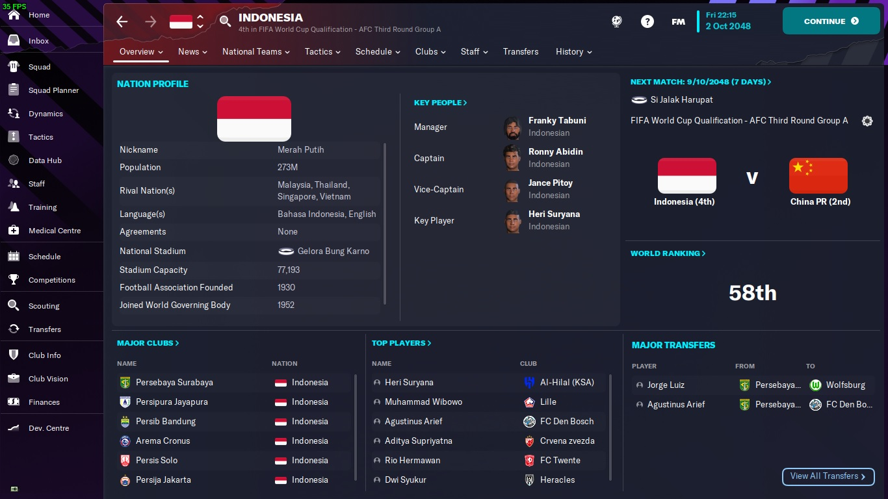

Profil
Pada simulasi 25 tahun game Football Manager 2023 ini, tim nasional Indonesia berada di peringkat ke-58 dunia.
Simulasi Tim Nasional Sepak Bola Indonesia dalam 25 Tahun ke Depan pada Game Football Manager 2023
Pada simulasi 25 tahun game Football Manager 2023 ini, tim nasional Indonesia berada di peringkat ke-58 dunia.
Pemain yang membela tim nasional Indonesia berasal dari berbagai klub di dunia. Hanya ada 3 klub dari Liga Indonesia yang mengirimkan pemainnya ke timnas, yaitu Persebaya Surabaya, Persib Bandung, dan Persipura jayapura.
Heri Suryana menjadi pemain Indonesia terbaik di game Football Manager 2023 pada tahun 2047. Pemain yang bermain di klub Arab Saudi Al-Hilal ini mencetak 2 gol dari 78 penampilan bersama tin nasional.
Di dunia nyata, Indonesia tidak pernah menjadi juara di wilayah Asia Tenggara maupun di Asia. Tapi di game Football Manager 2023 ini, Indonesia berhasil menjuarai AFF Cup dan AFC Asian Cup.
Dalam 14 edisi terahkir AFF Cup selalu mempertemukan Indonesia dengan Thailand di partai final. Akhirnya Indonesia berhasil juara AFF Cup untuk pertama kalinya pada tahun 2035.
Pada tahun 2047, Indonesia berhasil juara AFC Asian Cup 2047 dengan mengalahkan Korea Selatan di partai final yang digelar di Japan National Stadium Tokyo, Jepang.